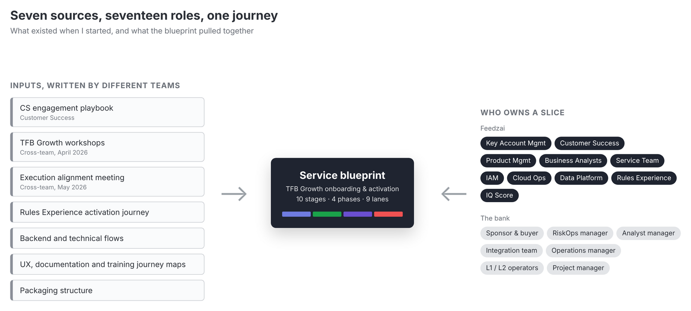
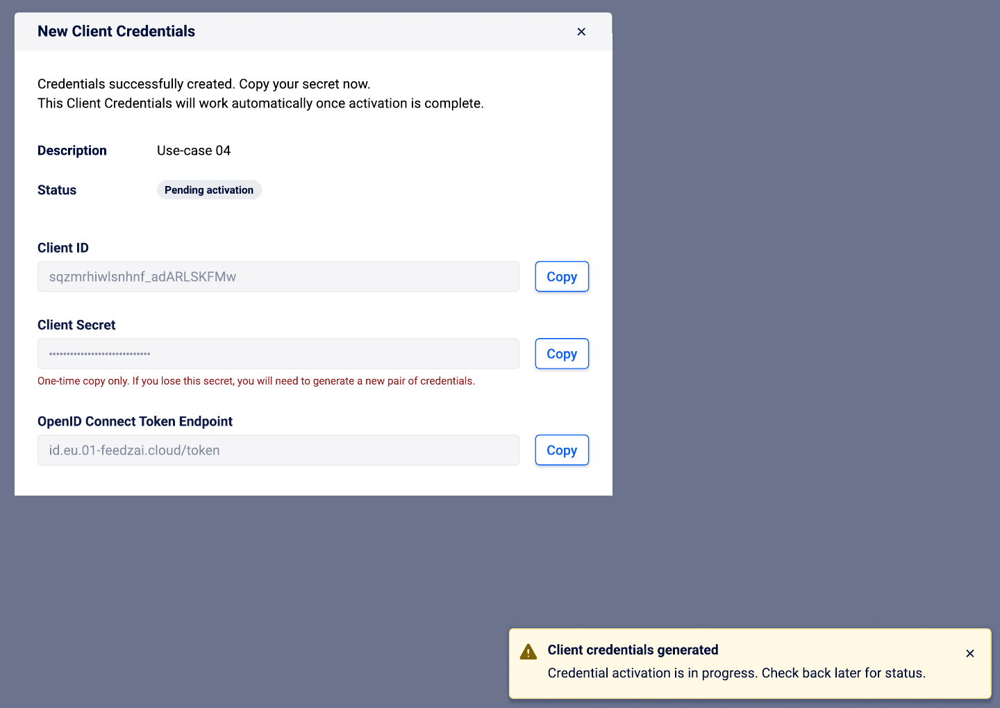

Feedzai RiskOps Studio
Self-service onboarding for fraud prevention
Taking a bank from a signed contract to a working setup on TFB Growth, a new self-service tier of Feedzai's fraud-prevention platform, without the emails and calls it used to take.
Context & Contribution
Feedzai builds fraud and anti-money-laundering software for banks. RiskOps Studio is its unified platform, gradually replacing the separate Fraud, AML and Identity applications. In 2026 Feedzai was preparing TFB Growth, a lighter, self-service entry tier of Transaction Fraud for Banking, due by the end of Q2. I joined on a contract, from February to July 2026, as the main designer for onboarding and activation. My contribution as Senior Product Designer:
- Helped researchers and product managers turn seven onboarding documents into one service blueprint
- Led the design of the three set-up features a bank meets first: SSO, IP allowlist and API client credentials
- Designed the Getting Started page that ties the three together
- Wrote specs with engineering in Kiro, a spec-driven AI tool, from design-system components
Problem & Opportunity
A self-service tier only works if a bank can set itself up. Today, that first step was the most manual part of the whole journey:
- Manual set-up: Customer success, project managers and the service team collected identity-provider details, IP lists and API key requests by email and on calls, about 8 hours per customer before the bank saw any value.
- No single view: Ten Feedzai teams and up to seven roles at the bank each owned a slice of onboarding, and what was known sat in seven documents that didn't always agree.
- A fixed date: TFB Growth had to launch by the end of Q2, so scope had to be one the team could commit to.
Discovery & Key Insights
Seven documents as research data
We treated the company's own documents as research. I used AI to pull steps, actors, systems and open questions out of each source; we then checked every item against the original and with the team that owned it, and logged conflicts instead of picking a side.

One service blueprint
The result was a blueprint of 10 stages in 4 phases, from contract to support and expansion, that every team could work from.

Key Insights
- The first login was a hand-off, not a product moment: admins needed to see what to do first, and what was still waiting on someone else.
- The wrong environment is easy to configure: each environment needs its own setup.
- Set-up errors were found late, by support: problems with SSO files only surfaced in tickets.
- Secrets and access changes can lock people out: mistakes here are expensive.
Design & Delivery
Getting Started
The first login now has a job: a page with the three set-up steps, each with its status, under the environment's name.

SSO that checks itself
SSO shows the values the identity provider needs, then checks the SAML file as it is uploaded: each claim found or missing, and missing ones generated to copy back. Errors are fixed at upload, not in a ticket.

Guardrails where mistakes are expensive
API credentials are listed per use case, from pending to revoked. A secret is shown once, with what happens if it's lost, and disabling SSO or revoking credentials is typed to confirm.

One status vocabulary
All three features share the same status labels and confirm pattern, so learning one teaches the others. A guided wizard was logged for Q3, so the team could commit to a Q2 date it could meet.

Achievements & Impact
into one service blueprint
(SSO, IP allowlist, API credentials)
that self-service is designed to remove
Key Takeaway
A company's own documents are research data
AI made it fast enough to extract everything from seven sources, and checking each item with its owner made the blueprint something every team trusted.
Get in touch if you want a deeper dive or to discuss how my skills and expertise can
help on your challenges.
More about me on LinkedIn. Let's connect!